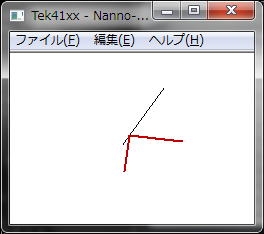
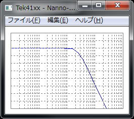
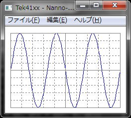
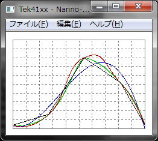
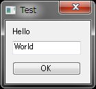

2.8 スクリプト仕様書
|
|
|
1 定数
|
| 定数 |
型 |
説明 |
例 |
| 文字 |
8ビット文字 |
char |
文字定数 |
'A', '\n', '\033' |
| 16ビット文字 |
wchar |
UTF-16文字定数 |
L'A', L'\n' |
| 数値 |
32ビット整数 |
int |
符号付き32ビットの整数 |
0, 1, -1, 0xFF |
| 64ビット整数 |
int64 |
符号付き64ビットの整数 |
0L, 10L, 2147483648 |
| 浮動小数点 |
double |
64ビットの浮動小数点 |
0.1, 10E-3, PI, E |
| 複素数 |
complex |
64ビットの複素数の虚数部 |
0.01i, (1+0j) |
| 文字列 |
8ビット文字列 |
str |
基本SHIFT-JISの8ビット文字列 |
"sample" |
| UTF-16文字列 |
wstr |
UTF-16の16ビット文字列 |
L"sample" |
| UCS-4文字列 |
dstr |
UCS-4の32ビット文字列 |
dstr("sample") |
|
2 変数
|
_,A-Z,a-zで始まり_,A-Z,a-z,0-9で構成される文字列
型は、基本的に自動で内部変換されますが、参照時に指定できます。 |
| 変数 |
型 |
説明 |
例 |
| 数値 |
32ビット整数 |
int |
符号付き32ビットの整数 |
abc = 0, int(abc), #abc |
| 64ビット整数 |
int64 |
符号付き64ビットの整数 |
abc = 0L, int64(abc) |
| 浮動小数点 |
double |
64ビットの浮動小数点 |
abc = 0.0 |
| 複素数 |
complex |
64ビットの実数、虚数 |
abc = 1 + 2i |
| 文字列 |
8ビット文字列 |
str |
基本SHIFT-JISの8ビット文字列 |
abc = "sample", str(abc), $abc |
| UTF-16文字列 |
wstr |
UTF-16の16ビット文字列 |
abc = L"sample", wstr(abc) |
| UCS-4文字列 |
dstr |
UCS-4の32ビット文字列 |
dstr(abc) |
予約済みの変数としてドキュメント変数「Document」とグローバル変数の「System」があります。
System変数は、プログラム内のすべての接続で共有の変数となりますが、現在は、何も設定していません。 |
|
3 配列
|
[ ] で変数を参照、代入で自動で配列を作成します。
インデックスは、数値もしくは、文字列を使用した連想配列を構成します |
| [ 数値 ] |
int |
符号付き32ビットの整数
（自動で配列を拡張しますので大きな数値を指定すると処理速度が下がります） |
abc[10] = 2, abc[#xyz] = 3
(変数の型が不確定の場合など#で参照すると数値として参照します) |
| [ 文字列 ] |
str |
基本SHIFT-JISの8ビット文字列 |
abc["test"] = 2, abc[$xyz] = 3
(変数の型が不確定の場合など$で参照すると文字列として参照します)
また、文字列の連想配列を「.」で連結して参照・代入することができます
abc["def"]["xyz"] と abc.def.xyz は、同一の変数を示します
|
| [ ] |
|
最後に追加して配列を拡張します |
abc[] = 2 |
|
4 文字配列
|
| { } で文字列変数の文字を参照・代入することができます |
| { 数値 } |
int |
符号付き32ビットの整数（文字数を自動で拡張します） |
abc{3} = 'A' |
| { } |
|
最後に追加して文字列を拡張します |
abc{} = 'A' |
|
5 演算子
|
| 優先順位 |
演算子 |
説明 |
例 |
| 1 |
name.index |
連想配列
※変数名と「．」を繋げる事 |
abc.xyz |
| ( expr ) |
演算優先 |
x = (a + b) * c |
| [ [index] : expr , ... ] |
配列定義 |
a = ["abc", "xyz"] |
| 2 |
expr [ expr ] |
配列 |
a[1], abc["xyz"] |
| 3 |
name ( expr, ... ) |
関数 |
abs(1), echo("test") |
| 4 |
expr { expr } |
文字配列 |
a{3} = 'A' |
| 5 |
++expr |
インクリメント後参照 |
++a |
| --expr |
デクリメント後参照 |
--a |
| expr++ |
参照後インクリメント |
a++ |
| expr-- |
参照後デクリメント |
a-- |
| 6 |
+ |
正の単項演算子 |
+10 |
| - |
負の単項演算子 |
-10 |
| ~ |
ビット反転 |
^1 |
| ! |
論理反転 |
!(a == 0) |
| # |
数値参照 |
#abc |
| $ |
文字列参照 |
$abc |
| 7 |
* |
乗算 |
a = 2 * 3 |
| / |
除算 |
a = 6 / 2 |
| % |
剰余 |
a = 7 / 3 |
| 8 |
+ |
加算 |
a = 1 + 2 |
| - |
減算 |
a = 3 - 2 |
| . |
文字列連結
※前にスペース必要 |
a = "abc" . "xyz" |
| 9 |
<< |
左ビットシフト |
1 << 8 |
| >> |
右ビットシフト |
16 >> 4 |
| 10 |
& |
ビットAND |
100 & 15 |
| ^ |
ビットXOR |
100 ^ 0x01 |
| | |
ビットOR |
100 | 0x01 |
| 11 |
< <= > >= |
関係演算子 |
1 > 0 |
| 12 |
== != |
関係演算子 |
a == 0 |
| 13 |
&& |
論理積 |
a == 1 && x == 2 |
| 14 |
|| |
論理和 |
a == 1 || a == 2 |
| 15 |
expr ? expr : expr |
条件参照 |
a == 0 ? 1 : 2 |
| 16 |
= *= /= += ... |
代入 |
a = 1 + 2 |
| 17 |
expr , expr |
列挙 |
a = 1, b = 2 |
|
6 構文
|
| 構文 |
説明 |
例 |
| stmt ; |
演算子を使った式 |
a = 1 + 2 ; |
| { stmt ; stmt ; } |
構文列挙 |
{
a = 1 + 2;
b = 3 + 4;
}
|
if ( expr ) stmt
else if ( expr ) stmt
else stmt |
条件判断 |
if ( a == 1 )
b = 2;
else if ( a == 2 )
b = 3;
else
b = 4;
|
| while ( expr ) stmt |
反復条件判断 |
while ( a == 1 )
a = abc(a);
|
| do stmt while ( expr ) ; |
do {
a = abc(a);
} while ( a == 1 );
|
| for ( expr ; expr ; expr ) stmt |
for ( n = 0 ; n < 5 ; n++ ) {
if ( a == 0 )
continue;
else if ( a == 1 )
break;
}
|
foreach ( [key : ] value in array )
stmt |
配列代入反復 |
foreach ( v in [ 1, 2, 3 ] )
echo(v);
|
switch ( expr ) {
case expr : stmt
default : stmt
} |
条件分岐 |
switch(a) {
case 0: a = 1 + 1; break;
case 1: a = 1 + 2;
default: a = 1 + 3; break;
}
|
| function name ( name ... ) stmt |
関数定義
「var」による明示的な変数定義によって関数内のローカル変数を定義できる。明示的に指定しない場合は、グローバル変数と見なす。 |
function abc(x) {
var n;
if ( x == y )
n = z;
return n;
}
|
|
7 基本関数
|
| 関数 |
説明 |
戻り値 |
例 |
実行結果 |
| echo ( string , ... ) |
コンソールに文字列を表示する。
文字列中の"\n"は、"\r\n"に変換されます |
|
echo("Hello world\n"); |
Hello world
■ |
| debug ( var ) |
変数の状態を文字列で返します。 |
str |
a = 99;
a["ABC"] = 777;
echo(debug(a)); |
:(ident)={a:(int)=99
[0:ABC:(int)=777]} |
| dump ( string ) |
文字列を16進数文字列に変換します。 |
str |
echo(dump("012")); |
30 31 32 |
| beep ( ) |
ビープサウンドを鳴らす |
|
beep(); |
|
| include ( filename ) |
別のスクリプトファイルを読み込み実行します |
|
include("userlib.txt"); |
|
| execstr ( string ) |
文字列のスクリプト実行します。
実行する度にコンパイルコードが追加されますので注意。 |
|
execstr("function abc() {
echo(\"Hello World\\n\");}"); |
abc関数を追加 |
| sleep ( msec ) |
ミリ秒単位で処理を中断します。 |
|
sleep(1000); |
|
| time ( ) |
現在時刻を返します。 |
int |
strftimeを参照 |
|
| command ( arg, ... ) |
RLoginのコマンドラインを実行します。 |
|
command("/telnet", "/ip ",host); |
別タブでtelnetを開く |
| exit ( value ) |
スクリプトの実行を終了します。
現在は、valueを無視します。 |
|
exit(0); |
|
| menu ( no, str, func, [menu] ) |
メニューに関数を登録します。
| no |
0-9のメニュー番号 |
| str |
メニューに表示される文字 |
| func |
ユーザー定義関数名を文字列で指定。組み込み関数は、指定出来ません。 |
| menu |
追加されるメニュー位置キー定義で使用している$から始まる文字が指定できます。指定無きは、「スクリプトの停止」の上に追加します |
|
|
function Hello() {
echo("Hello World\n");
}
menu(0, "こんにちは", "Hello"); |
|
| menucall (menu ) |
キー定義で使用している$から始まる文字でメニューを実行します |
|
menucall("$WINDOW_CLOSE"); |
ウィンドウを閉じる |
| menucheck (menu ) |
キー定義で使用している$から始まる文字でメニューのチェック状態を取得します |
int |
if(menucheck("$BROADCAST")==0)
menucall("$BROADCAST");
broadcast("ls\r");
if(menucheck("$BROADCAST")==1)
menucall("$BROADCAST"); |
ブロードキャストメニューをON/OFFしてすべてのウィンドウにコマンドを送る |
| menuenable (menu ) |
キー定義で使用している$から始まる文字でメニューの状態を取得します |
int |
| iconstyle ( msg ) |
タスクトレーにアイコン化します |
|
|
|
| getproint ( profile, [value] ) |
レジストリprofile名から整数を読み込みます。valueは、設定無しの場合のデフォルト値です |
int |
logdate = getproint("date", time());
logfile = getprostr("file", "Log.txt");
putproint("date", logdate);
putprostr("file", logfile);
; |
|
| putproint ( profile, value ) |
レジストリにprofile名で整数を書き出します。 |
|
| getprostr ( profile, [str] ) |
レジストリprofile名から文字列を読み込みます。valueは、設定無しの場合のデフォルト値です |
str |
| putprostr ( profile, str ) |
レジストリにprofile名で文字列を書き出します。 |
|
| int ( string ) |
符号付き32ビット整数を返します。 |
int |
a = "10";
b[a] = "STR ";
b[int(a)] = "DIGIT ";
echo(b["10"], b[10]); |
STR DIGIT |
| int64 ( string ) |
符号付き64ビット整数を返します。 |
int64 |
echo(sprintf("%I64d",int64("100")); |
100 |
| str ( value ) |
8ビット文字列を返します。 |
str |
str(100) == "100" |
|
| wstr ( value ) |
16ビット文字列を返します。 |
wstr |
wstr(100) == L"100" |
|
| dstr ( value ) |
32ビット文字列を返します。 |
dstr |
dstr(100) == L"100" |
|
| length ( string ) |
文字数を返します |
int |
echo(length("ABC") ); |
3 |
sort ( var )
rsort ( var ) |
配列を整列します。
空の配列は、詰められます。 |
|
a = ["XYZ","ABC","DEF"];
sort(a);
echo(a[0], a[1], a[2]); |
ABCDEFXYZ |
ksort ( var )
krsort ( var ) |
配列のキーによって整列します。
空の配列は、詰められます。 |
|
a = ["XYZ":1,"ABC":2,"DEF":3];
ksort(a);
echo(a[0], a[1], a[2]); |
231 |
| count ( var ) |
配列の要素数を返します。 |
int |
a = ["XYZ","ABC","DEF"];
echo( count(a) ); |
3 |
| key ( var ) |
連想配列のキーを返します。 |
str |
a["ABC"] = 1;
echo( key(a[0]) ); |
ABC |
| reset ( var ) |
変数を初期化します。 |
|
a = 1;
a["ABC"] = 1;
reset(a);
echo( a, count(a) ); |
00 |
| pack ( var ) |
変数を配列を含めてパックします |
str |
b = pack(a);
a = unpack(b); |
|
| unpack ( string ) |
packされた変数を元に戻します |
var |
|
8 文字列関数
|
| 関数 |
説明 |
戻り値 |
例 |
実行結果 |
substr ( string , index ,
length ) |
stringのindex目からlength個の文字を返す |
str |
a = "ABCXYZDEF";
b = strstr(a, "XYZ");
c = substr(a, b, 3);
echo(b . " " . c); |
3 XYZ |
| strstr ( string , pattan ) |
stringのpattanに一致する文字列の位置を返す |
int |
| trim ( string , pattan ) |
stringからpattanに一致する両端の文字を削除する |
wstr |
a = "ABCCBAXYZFEDDEF";
echo(trim(a, "ABC")."\n");
echo(trim(a, "XYZ")."\n");
echo(trim(a, "DEF")."\n"); |
XYZFEDDEF
ABCCBAXYZFEDDEF
ABCCBAXYZ |
| trimleft ( string , pattan ) |
stringからpattanに一致する左端の文字を削除する |
wstr |
| trimright ( string , pattan ) |
stringからpattanに一致する右端の文字を削除する |
wstr |
| ctos ( char ) |
charコードを文字列に変換する。
コードは、UCS-4を想定してサロゲート処理する |
wstr |
a = 0x10000;
s = ctos(a);
echo(dump(s)); |
D800 DC00 |
| sprintf ( format , ... ) |
引数をフォーマットして文字列を返す |
str |
echo(sprintf("TEST=%02x\n",41)); |
TEST=29 |
| escstr ( strring ) |
データベース引数用に文字をエスケープする。 |
str |
|
|
| escshell( string ) |
シェルの引数用に文字をエスケープする。 |
str |
echo(escshell("abc > xyz")); |
abc\ \>\ xyz |
| speak( string ) |
音声合成で話す |
str |
speak("こんにちは"); |
|
| strftime ( format , time ) |
time()で返される日時をフォーマットして文字列を返す |
str |
a = time();
echo(
strftime("%m/%d/%y %H:%M:%S\n", a));
b = getdate(a);
c = mktime(b.hour, b.min, b.sec,
b.mon, b.mday, b.year);
echo(
strftime("%m/%d/%y %H:%M:%S\n", c)); |
03/02/12 08:50:56
03/02/12 08:50:56 |
| getdate ( time ) |
time()で返される日時を配列で返す
| mday |
日/月 |
yday |
日/年 |
| wday |
曜日 |
sec |
秒 |
| mon |
月 |
min |
分 |
| year |
年 |
hour |
時 |
|
array |
mktime ( [hour] , [minute] ,
[second] ,[month] , [day] ,
[yea r], [dst] ) |
個々の日時要素からtime()と同じ経過時間を返す |
int |
|
9 正規表現関数
|
| 関数 |
説明 |
戻り値 |
例 |
実行結果 |
| ereg ( pattan, string ) |
正規表現で一致した数と要素を返す |
int
array |
a = "abc012xyz345";
b = ereg("([0-9]+)[^0-9]*([0-9]+)", a);
for( n = 0 ; n < b ; n++ )
echo(sprintf("%d='%s'\n", n, b[n])); |
0='012xyz345'
1='012'
2='345' |
replace ( pattan ,
replace , string ) |
正規表現で一致した文字列を置き換える |
str |
a = "abc012xyz345";
b = replace("[0-9]+", "DIG", a);
echo(b); |
abcDIGxyzDIG |
| split ( pattan , string ) |
正規表現で一致した文字列で分割する |
int
array |
a = "abc def xyz ";
b = split("[ \t]+", a);
for( n = 0 ; n < b ; n++ )
echo(sprintf("%d='%s'\n", n, b[n])); |
0='abc'
1='def'
2='xyz' |
| regopen ( pattan ) |
正規表現を準備する |
ptr |
Document.Open();
wait(CONNECT);
copen();
p = regopen("[eE][rR][rR][oO][rR]");
while ( (a = cgetc()) != EOF ) {
if ( regchar(a, p) )
beep();
}
regclose(p);
cclose();
|
ERRORが表示されるとビープ音が鳴ります。 |
| regclose ( ptr ) |
regopenで準備した構成を放棄する |
|
| regchar ( char, ptr ) |
1文字(UCS-4)単位で正規表現をチェックする一致した場合は、[0]に一致文字列を返しcharでpos指定した場合には、そのposも返す。 |
int
array |
| regstr ( string , ptr ) |
文字列単位で正規表現をチェックする |
int
array |
|
10 文字変換関数
|
| 関数 |
説明 |
戻り値 |
例 |
実行結果 |
| remotestr ( string ) |
現在の漢字コードに文字列を変換します |
str |
cwrite(remotestr("漢字")); |
漢字 |
| localstr ( string ) |
現在の漢字コードの文字列から変換します |
str |
echo(localstr(sread(20))); |
|
| iconv ( from , to , string ) |
iconvを使って文字列を変換します。
※内部漢字コードが変化しますので動作には、注意が必要です。
※内部文字コードは、「CP932」です。 |
str |
a = "漢字";
b = iconv("CP932", "UTF-8", a);
echo(dump(a), dump(b)); |
8A BF 8E 9A
E6 BC A2 E5 AD 97 |
| iconvw ( from , to , string ) |
wstr「UTF-16LE」に変換します。 |
wstr |
| iconvd ( from , to , string ) |
dstr「UCS-4LE」に変換します。 |
dstr |
| md5 ( string , [base16] ) |
md5/sha1ハッシュ関数で文字列をコード化します。base16を「0」で16進数文字列に変換します。「0」以外では、バイナリーのまま返します。 |
str |
a = "ABCDEF";
echo(md5(a)."\n");
echo(sha1(a)."\n"); |
8827a41122a5028b9808
c7bf84b9fcf6
970093678b182127f60b
b51b8af2c94d539eca3a |
| sha1 ( string , [base16] ) |
str |
| base64e ( string ) |
base64/base16/quotedで文字列を変換します。末尾の「e」でエンコード「d」でデコードです。 |
str |
a = "ABCDEF";
b = base16e(a);
c = base16d(b);
echo(a, "\n", b, "\n", c); |
ABCDEF
414243444546
ABCDEF
|
| base64d ( string ) |
str |
| base16e ( string ) |
str |
| base16d ( string ) |
str |
| quotede ( string ) |
str |
| quotedd ( string ) |
str |
| crc16 ( crc , int ) |
crc16/32で数値をコード化します。 |
int |
a = "ABCDEF";
for ( n = c = 0 ; n < length(a) ; n++ )
c = crc16(c, a{n});
echo(sprintf("%04X\n", c)); |
944D |
| crc32 ( crc , int ) |
int |
| cipopen ( type, key, ec ) |
暗号化処理を開きます |
ptr |
p = cipopen("aes128-ctr", "key", 0);
s = cipstr("Sample", p);
echo(base16e(s));
cipclose(p); |
|
| cipclose( ptr ) |
暗号化処理を閉じます |
|
| cipstr ( str, ptr ) |
文字列を暗号化します |
str |
|
11 コンソール関数
|
| 関数 |
説明 |
戻り値 |
例 |
実行結果 |
| copen ( ) |
画面表示される文字読み取りを開始します。cputsなどの出力は、無限ループを避ける為に、入力しませんが、ソケットからの入力は、通常コンソールに出力されコンソール入力として読み取ります。
sputs()などのソケット出力がエコーバックされる場合、無限ループになる可能性があります注意してくだい |
|
Document.Open();
wait(CONNECT);
copen();
p = regopen("[eE][rR][rR][oO][rR]");
while ( (a = cgetc()) != EOF ) {
if ( (b = regchar(a, p)) ) {
for ( n = 0 ;
n < length(b[0]) ; n++ ) {
c = getchar(b[0]["pos"] + n);
c.fc = 1;
setchar(c, b[0]["pos"] + n);
}
}
}
regclose(p);
cclose();
|
ERRORが表示されると文字色を赤に変える |
| cclose ( ) |
コンソール読み取りを閉じます |
|
| cgetc ([msec] ) |
画面に表示される文字をUCS-4で読み込み「pos」配列に画面表示位置情報を返します。
空の場合は、画面更新があるまで処理を最大msecミリ秒中断します。
msecに０を指定した場合は、タイムアウトしません。
ソケットが開いていない場合、もしくは、msecに(-1)を指定した場合はEOF(-1)を返します |
char |
| cgets ([msec] ) |
画面に表示される文字をUTF-16の16ビット文字列で「\n(0A)」で改行されるまで読み込みます。
ソケットが開いていない場合は、""空白を返します |
str |
| cputc ( char ) |
UCS-4文字を現在の漢字コードに変換して画面に表示します |
|
| cputs ( string ) |
現在の漢字コードに文字列を変換して画面に表示します。
echo()と似ていますが「\n」を変換しません |
|
| cwrite ( string ) |
文字列をそのままの形で画面に送ります |
|
| locate ( x , y ) |
カーソル位置を移動し画面の位置情報を返します |
int |
| getchar ( pos ) |
locateやcgetcで取得した位置情報から画面に表示されている文字情報を取得します。
| fc |
文字色 |
at |
文字属性 |
| bc |
背景色 |
ft |
フォント番号 |
|
char
array |
| setchar (char, pos ) |
getcharで取得した文字情報を指定した位置に戻し画面表示を更新します。 |
|
| getpos ( ) |
現在のカーソル位置のposを返す。 |
int |
| xypos ( x, y ) |
指定画面位置のposを返す。 |
int |
| getstr ( spos, epos ) |
指定pos位置の画面に表示されてい
る文字列を返す |
wstr |
swait ( sec ,
[pattan, ...]) |
最大sec秒間、正規表現と一致する文字列が表示されるまで処理を中断します。 |
int |
switch(swait(10, "CONNECT", "ERR")) {
case (-1): // Time Out
Document.Close();
break;
case 0: // CONNECT
sputs("%s\r", Document.Entry.User);
break;
case 1: // ERR
echo("Command Error\n");
break;
}
|
|
|
12 入出力関数
|
| 関数 |
説明 |
戻り値 |
例 |
実行結果 |
| sopen ( mode ) |
ソケット入力を開きます
| OPEN_LOOK |
0 |
ソケット入力を読み取ります
画面表示にも送られます |
| OPEN_CATCH |
1 |
ソケット入力を横取りします
画面表示には送られません |
|
|
Document.Open();
wait(CONNECT);
sopen(OPEN_LOOK);
while ( (s = sgets()) != "" ) {
if ( strstr(s, "ERROR") >= 0 )
beep();
}
sclose();
|
ERRORとソケットから入力があればビープを鳴らします。 |
| sclose ( ) |
ソケット入力を閉じます。 |
|
| sgetc ( [msec] ) |
ソケットからの入力をを8ビット文字として読み込みます。
空の場合は、ソケット入力があるまで処理を最大msecミリ秒中断します。msecに０を指定した場合は、タイムアウトしません。
ソケットが開いていない場合、もしくは、msecに(-1)を指定した場合は、EOF(-1)を返します |
char |
| sgets ([msec] ) |
ソケットからの入力を8ビット文字列として改行コード「\n(0A)」が入力されるまで読み込みます
ソケットが開いていない場合は、「""」空白を返します |
str |
| sread ( size, [msec] ) |
ソケットからの入力を指定サイズまで読み込みます。入力文字数がサイズ未満でも文字列を返します。
ソケットが開いていない場合は、「""」空白を返します |
str |
| sputc ( char ) |
UCS-4文字を現在の漢字コードに変換してソケットに送ります。 |
char |
| sputs ( string ) |
現在の漢字コードに文字列を変換してソケットに送ります。 |
str |
| swrite ( string ) |
文字列をそのままの形でソケットに送ります。 |
str |
| wait ( mode ) |
| CONNECT |
0 |
ソケットが接続するまで処理を中断します |
| CLOSE |
1 |
ソケットが閉じるまで処理を中断します |
|
int |
Document.Open();
wait(CONNECT);
echo("Hello"); |
サーバー接続後「Hello」を表示 |
| sendstr ( string ) |
キー入力された文字などと同じレベルで文字列を送信します。結果、ブロードキャストや改行コード変換などの影響をうけます |
str |
|
|
| broadcast ( string , [group] ) |
ブロードキャストがONの接続に文字列を送信します |
|
|
|
| comset ( string ) |
通信条件をサーバーオプションのシリアル設定でサーバー名の代わりに用いる文字列で設定します |
str |
Document.Open();
wait(CONNECT);
comset("9600");
comrts(0);
sputs("Hello");
comrts(1);
|
これらのシリアル制御関数は、接続中のみ使用でき、変更は、保存されません |
| comdtr ( int ) |
シリアル信号線のDTRを設定します
0=DTR OFF, 1=DTR ON
DTRをフロー制御に使用していると設定できません |
int |
| comrts ( int ) |
シリアル信号線のRTSを設定します
0=RTS OFF, 1=RTS ON
RTSをフロー制御に使用していると設定できません |
int |
| combreak ( int ) |
ブレーク信号を送ります
0=100ms, 1=300ms |
int |
|
13 ファイル関数
|
| 関数 |
説明 |
戻り値 |
例 |
実行結果 |
fopen ( filename , mode ,
[share] ) |
shareに下記の値を設定するとファイル共有モードでファイルを開きます。
| SH_DENYNO |
0 |
読み出しアクセスおよび書き込みアクセスを許可します |
| SH_DENYRD |
1 |
ファイルの読み出しを禁止します。 |
| SH_DENYWR |
2 |
ファイルの書き込みを禁止します。 |
| SH_DENYRW |
3 |
ファイルの読み出しと書き込みを禁止します。 |
|
fp |
if ( (fp=fopen("C:\\Tmp\\Hello.txt", "w")) ) {
fputs("Hello World\n", fp);
fclose(fp);
}
|
|
| fclose ( fp ) |
ファイルを閉じます |
|
| popen ( cmdline , mode ) |
パイプ接続の外部プログラムを実行します。 |
fp |
| pclose ( fp ) |
popenしたfpを終了します。 |
int |
| fgetc ( fp ) |
1バイト読み込み |
int |
| fgets ( fp ) |
1行読み込み |
str |
| fread ( size , fp ) |
指定サイズ読み込み |
str |
| fputc ( char , fp ) |
1バイト書き込み |
int |
| fputs ( string , fp ) |
1行書き込み |
str |
| fwrite ( string , fp ) |
指定サイズ書き込み |
int |
| feof ( fp ) |
終端チェック |
int |
| ferror ( fp ) |
エラーチェック |
int |
| fflush ( fp ) |
バッファをフラッシュ |
int |
| ftell ( fp ) |
現在位置を返す |
int64 |
| file ( filename ) |
ファイルを配列に読み込み行数を返します。 |
int
array |
len = file("test.txt");
echo(,len," lines\n"); |
0 lines |
| stat ( filename ) |
ファイルの下記の属性を配列で返します
| dev |
uid |
atime |
| ino |
gid |
mtime |
| mode |
rdev |
ctime |
| nlink |
size |
|
|
int
array |
if ( !stat("test.txt") )
echo("Not Found"); |
|
| basename ( pathname ) |
パス名からファイル名を返します |
str |
echo(basename("c:\hello\world.txt")); |
world.txt |
| dirname ( pathname ) |
パス名からディレクトリ名を返します |
str |
echo(dirname("c:\hello\world.txt")); |
c:\hello |
| copy ( srcfile , newfile ) |
ファイルをコピーします |
int |
|
|
| rename ( srcfile , newfile ) |
ファイル名を変更します |
int |
| delete ( filename ) |
ファイルを削除します |
int |
| chdir ( dirname ) |
カレントディレクトリを変更します |
int |
| play ( filename ) |
サウンドファイルを鳴らします |
|
play("beep.wav"); |
|
| shellexec ( pathname , param , workdir ) |
プログラム・URLなどを実行します |
int |
shellexec("http://www.yahoo.co.jp/"); |
|
|
14 数学関数
|
| 関数 |
説明 |
戻り値 |
例 |
実行結果 |
| rand ( ) |
擬似乱数 |
int |
tekopen();
ox = 2000;
oy = 1500;
rh = 600;
rm = 900;
rs = 1000;
rt = 200;
for ( ; ; ) {
tekclear();
t = getdate(time());
sx = ox + rh * sin(2 * PI *
(t.hour * 60 + t.min) / 720);
sy = oy + rh * cos(2 * PI *
(t.hour * 60 + t.min) / 720);
tekline(ox, oy, sx, sy, 2, 0, 2);
sx = ox + rm * sin(2 * PI *
(t.min * 60 + t.sec) / 3600);
sy = oy + rm * cos(2 * PI *
(t.min * 60 + t.sec) / 3600);
tekline(ox, oy, sx, sy, 2, 0, 2);
sx = ox + rs * sin(2 * PI * t.sec / 60);
sy = oy + rs * cos(2 * PI * t.sec / 60);
ex = ox - rt * sin(2 * PI * t.sec / 60);
ey = oy - rt * cos(2 * PI * t.sec / 60);
tekline(ex, ey, sx, sy, 1, 0, 1);
sleep(1000);
}
|
 |
| srand ( int ) |
擬似乱数の基数 |
|
| floor ( double ) |
床関数 |
double |
| abs ( double ) |
絶対値 |
double |
| sqrt ( double ) |
平方根 |
double |
| pow ( double, double ) |
べき乗 |
double |
| ceil ( double ) |
天井関数 |
double |
| fmod ( double, double) |
剰余 |
double |
| sin ( double ) |
正弦 |
double |
| cos ( double ) |
余弦 |
double |
| tan ( double ) |
正接 |
double |
| asin ( double ) |
逆正弦 |
double |
| acos ( double ) |
逆余弦 |
double |
| atan ( double ) |
逆正接 |
double |
| atan2 ( double, double ) |
直角三角形の逆正接 |
double |
| sinh ( double ) |
双曲線正弦 |
double |
| cosh ( double ) |
双曲線余弦 |
double |
| tanh ( double ) |
双曲線正接 |
double |
| log ( double ) |
自然対数 |
double |
| log10 ( double ) |
常用対数 |
double |
| exp ( double ) |
指数関数 |
double |
|
15 複素数関数
|
| 関数 |
説明 |
戻り値 |
例 |
実行結果 |
| complex ( real , imaginary ) |
実数虚数 |
complex |
tekopen();
ofx = 200; ofy = 200; szx = 3700; szy = 2500;
tekbox(ofx, ofy, ofx + szx, ofy + szy);
for ( n = 0 ; n < 10 ; n++ ) {
sy = n * szy / 10;
tekline(ofx, ofy + sy,
ofx + szx, ofy + sy, 0, 1);
}
for ( f = 10 ; f < 100000 ; f *= 10 ) {
for ( i = 0 ; i < 10 ; i++ ) {
n = (log10(f + (f * i)) - 1) * 2.5;
sx = n * szx / 10;
tekline(ofx + sx, ofy,
ofx + sx, ofy + szy, 0, 1);
}
}
h = 8; r = 0.68 * pow(10, -3);
c = 5.6 * pow(10, -6);
d = log(1.122); v = pow(1.122, 90);
for ( n = 0 ; n <= 10 ; n += 0.1 ) {
f = pow(10, n / 2.5 + 1);
u = 2 * PI * f;
zh = complex(h, 0);
zr = complex(0, u * r);
zc = 1 / complex(0, u * c);
zx = 1 / (1 / zh + 1 / zc);
t = v * (zx / (zr + zx));
w = (log(cabs(t)) / d - 50) * 2;
s.x = n * szx / 10 + ofx;
s.y = w * szy / 100 + ofy;
if ( w > 0 ) xy[] = s;
}
tekpoly(xy, 4, 0);
|
 |
| cpow ( complex , complex ) |
べき乗 |
complex |
| csqrt ( complex ) |
平方根 |
complex |
| csin ( complex ) |
正弦 |
complex |
| ccos ( complex ) |
余弦 |
complex |
| ctan ( complex ) |
正接 |
complex |
| clog ( complex ) |
自然対数 |
complex |
| cexp ( complex ) |
指数関数 |
complex |
| cabs ( complex ) |
絶対値 |
double |
| carg ( complex ) |
偏角 |
double |
| creal ( complex ) |
実数 |
double |
| cimg ( complex ) |
虚数 |
double |
|
16 グラフィック関数
|
| 関数 |
説明 |
例 |
実行結果 |
| tekopen ( show ) |
tekウィンドウを開きます
show 0 別ウィンドウ
show 1 コンソールに重ねる |
tekopen();
ofx = 200;
ofy = 200;
szx = 3700;
szy = 2500;
tekbox(ofx, ofy, ofx + szx, ofy + szy);
for ( n = 0 ; n < 10 ; n++ ) {
sx = n * szx / 10;
sy = n * szy / 10;
st = n == 5 ? 0 : 1;
tekline(ofx, ofy + sy,
ofx + szx, ofy + sy, 0, st);
tekline(ofx + sx, ofy,
ofx + sx, ofy + szy, 0, st);
}
for ( n = 0.0 ; n < (PI * 6) ; n += 0.1 ) {
a.x = n * szx / (PI * 6) + ofx;
a.y = sin(n) * szy / 2.0 + szy / 2 + ofy;
xy[] = a;
}
tekpoly(xy, 4, 0);
|
 |
| tekclose ( ) |
tekウィンドウを閉じます |
| tekclear ( [flush] ) |
tekウィンドウを初期化します |
tekmark ( no, sx, sy,
color, style, size, [flush] ) |
マークを指定位置に表示します。
| sx,sy |
0から4095までの座標左下が0,0です。 |
| no |
0から10のマークを指定 |
| color |
0から15までの色を指定 |
| style |
0から7までの線種を指定 |
| size |
1,2の線幅を指定 |
| flush |
0 画面を更新する
1 画面の更新しない |
|
tektext ( sx, sy, str,
color, size, angle, [flush] ) |
文字列を描きます
|
tekline ( sx, sy, ex, ey,
color, style, size, [flush] ) |
線を描きます |
tekbox ( sx, sy, ex, ey,
color, style, size, [flush]) |
四角形を描きます |
tekopen();
ofx = 200;
ofy = 200;
szx = 3700;
szy = 2500;
xys = [
complex(200, 300),
complex(1200, 600),
complex(2200, 2200),
complex(3200, 1500),
complex(3900, 300) ];
tekbox(ofx, ofy,
ofx + szx, ofy + szy, 0, 0, 1, 1);
for ( n = 0 ; n < 10 ; n++ ) {
sx = n * szx / 10;
sy = n * szy / 10;
tekline(ofx, ofy + sy,
ofx + szx, ofy + sy, 0, 1);
tekline(ofx + sx, ofy,
ofx + sx, ofy + szy, 0, 1);
}
tekpoly(xys, 1, 0);
teksmooth(xys, 2);
tekspline(xys, 3);
teklesq(xys, 3, 4);
tekflush();
|
 |
tekarc ( x, y, r,
color, style, size, [flush]) |
円を中心位置と半径で描きます |
tekpoly ( xys,
color, style, size, [flush] ) |
xysの「x」「y」配列もしくは、complex配列で線を描きます |
tekbezier ( xys,
color, style, size, [flush] ) |
ベジェ曲線で線を描きます |
teksmooth ( xys,
color, style, size, [flush] ) |
ベジェ曲線で補間線を描きます |
tekspline ( xys,
color, style, size, [flush] ) |
スプライン曲線で補間線を描きます |
teklesq ( xys, n,
color, style, size, [flush] ) |
n次の最小二乗法で補間線を描きます |
| tekflush ( ) |
表示の更新 |
|
16 ダイアログ関数
|
| 関数 |
説明 |
戻り値 |
例 |
実行結果 |
| msgdlg ( string ) |
メッセージボックスを表示します。 |
|
if ( yesnodlg("終了しますか？") )
exit(0); |
「終了しますか？」のメッセージダイアログを表示し「はい」を選択するとスクリプトを終了します |
| yesnodlg (string ) |
はい、いいえの選択メッセージボックスを表示します。 |
int |
| filedlg ( rw, ext, file, filter ) |
ファイル選択ダイアログを表示してファイルパスを返します。 |
str |
filename = filedlg(TRUE);
echo(filename); |
ファイルの保存モードでファイル選択ダイアログを表示しま
す |
| inputdlg ( title, msg, string ) |
文字入力ダイアログを表示して文字列を返します |
str |
filename = inputdlg("", "ファイル名"); |
「ファイル名」と表示した文字入力ダイアログを表示します |
passdlg ( host, user, pass,
[prompt], [title], [sec] ) |
パスワード入力ダイアログを表示してパスワードを返します。
| [0] |
ホスト名 |
| [1] |
ユーザー名 |
| [2] |
パスワード |
|
int
array |
| textwnd(title, msg ) |
テキストウィンドウ変数を返す |
wnd |
msg = textwnd("Test", "Hello");
msg.open();
msg.settext("Hello World\r\n");
msg.addtext("This is Test\r\n");
msg.close(); |
テキストウィンドウを開きます |
| wnd.open() |
ウィンドウを表示します |
|
| wnd.settext(msg) |
テキストを置き換え表示します |
|
| wnd.addtext(msg) |
テキストを追加表示します |
|
| wnd.close() |
ウィンドウを閉じます |
|
dialog ( name, size , [child],
[point], [face] ) |
ダイアログ変数を返す。
nameは、ウィンドウタイトルsizeは、[ x, y, width, height ]の配列で位置とサイズを指定。
childは、下記のaddと同じ引数を配列で指定できます。
point,faceは、ダイアログで使用するフォントを指定します。
point 1/10ポイント(90)
face フォント名("") |
dialog |
abc = dialog("Test", [ 100,100,130,120 ],
[
[ "static", [ 10,10,100,20 ], "Hello" ],
[ "edit", [ 10,30,100,20 ], "World" ],
[ "button", [ 10,60,100,20 ], "OK",
0, "OnClickOk" ],
]
);
abc.open();
abc.center();
abc.show(1);
abc.wait();
function OnClickOk ( id, node ) {
echo( "Input ", abc.gettext(1), "\n");
abc.close();
}
|
 |
dislog.add( type, size, text,
check, func ) |
ダイアログに下記のウィンドウを追加してそのインデックスを返します。ただし下記のopen()するまでに追加してください。
| type |
説明 |
| static |
スタティックテキスト |
| group |
グループテキスト |
| edit |
エディットボックス |
| combo |
コンボボックス |
| list |
ダウンリストボックス |
| check |
チェックボックス |
| radiotop |
最初のラジオボタン |
| radio |
ラジオボタン要素 |
| button |
プッシュボタン |
| progress |
プログレスバー |
sizeは、[ x, y, width, height ]の配列で位置とサイズを指定。
textは、ウィンドウに表示される文字列を指定。
checkは、チェックボックス、ラジオボタンの状態を指定。
funcは、エディットの変更、ボタンのクリックなどで呼び出す関数名を文字列で指定します。 |
id |
| dislog .open ( ) |
ダイアログを作成する。ただしshow関数で指定されるまで表示されません。
正常に作成された場合は、1を返します。 |
int |
| 下記の関数は、dialog.open()後に有効な関数です。 |
|
|
| dialog .close ( ) |
ダイアログを閉じる |
|
| dialog .center ( ) |
ダイアログの表示位置を中心に移動する。 |
|
| dialog .show ( mode ) |
0 ダイアログを非表示にする
1 ダイアログを表示する |
|
| dialog .wait ( ) |
ダイアログの終了を待つ |
|
dialog .modstyle ( id,
del, add, [delex, addex] ) |
ウィンドウスタイルの変更。
idは、addの返り値かウィンドウ配列の順番号。
delで削除、addで追加です
詳細は、ModifyStyleなどのウィンドウスタイルを参照ください |
|
dialog .sendmsg ( id, msg,
wparam, [lparam] ) |
子ウィンドウに直接メッセージを送信します。 |
|
| dialog .gettext ( id ) |
エディットボックスから文字列を読み取る。 |
str |
| dialog .getcheck ( id ) |
チェックボックスの状態を返す |
int |
| dialog .getradio ( id ) |
ラジオボックスグループの番号を返す。 |
int |
| dialog .getselect ( id ) |
ダウンリストの選択番号 |
int |
| dialog .settext ( id, str ) |
ウィンドウテキストの変更 |
|
| dialog .setcheck ( id, check ) |
チェックボックスの変更 |
|
| dialog .setradio ( id, num ) |
ラジオボタンの変更 |
|
| dialog .setselect ( id, num ) |
ダウンリストの変更 |
|
| dialog .setlist ( id, lists ) |
コンボボックス・ダウンリストのエントリーを配列で指定 |
|
dialog .setrange ( id, min,
max ) |
プログレスバーの範囲を設定 |
|
| dialog .setpos ( id, pos ) |
プログレスバーの位置を設定 |
|
|
18 データベース関数
|
| 関数 |
説明 |
戻り値 |
例 |
実行結果 |
| database ( ) |
データベース変数を返す |
ptr |
db = database();
db.open("DSN=Sample");
db.sql("select * from SampTable");
while ( (a = db.fetch()) )
echo(a[0]);
db.close(); |
|
| database.open ( name, [mode] ) |
データベースを開く |
int |
| database.close ( ) |
データベースを閉じる |
|
| database.sql ( sql ) |
sqlを実行する |
int |
| database.fetch ( ) |
レコードを読み込みフィールド数を返す。
フィールドデータは、配列にフィールド名をキーとして格納される |
int
array |
| database.count ( ) |
レコード数を返す |
int |
| database.move ( pos ) |
レコード位置の移動 |
|
|
19 ドキュメント変数
|
| 変数 |
説明 |
型 |
| Document.Entry |
エントリー変数 |
|
| Document.Screen |
スクリーン変数 |
|
| Document.KeyCode |
キーコード変数 |
|
| Document.KeyMacro |
キーマクロ変数 |
|
| Document.ssh |
ssh関連変数 |
|
| Document.Title |
ウィンドウタイトルを返します |
str |
| Document.CmdLine |
このエントリーのコマンドライン文字列 |
str |
| Document.Command ( id ) |
メニュー操作を行います |
func |
| Document.Open ( ) |
ソケットを開きます |
func |
| Document.Close ( ) |
ソケットを閉じます |
func |
| Document.Destroy ( ) |
ドキュメントを閉じます |
func |
| Document.DoOpen |
0 スクリプト終了時にソケットを開かない
1 スクリプト終了時にソケットを開く |
int |
| Document.Connect |
0 ソケットに接続していない
1 ソケットに接続中 |
int |
| Document.Abort |
1 スクリプト終了要求あり |
int |
| Document.Log |
0 現在、ログファイルを開いていない
1 ログファイルが開いている |
int |
| Document.Log.File |
ログファイル名 |
str |
| Document.Log.Mode |
ログモード |
int |
| Document.Log.Code |
ログ漢字コード |
int |
| Document.Log.Open ( filename ) |
ログファイルを開く |
func |
| Document.Log.Close ( ) |
ログファイルを閉じる |
func |
|
20 エントリー変数
|
| 変数 |
説明 |
型 |
| Document.Entry |
サーバーエントリー名 |
str |
| Document.Entry.Host |
ホスト名 |
str |
| Document.Entry.Port |
ポート番号 |
str |
| Document.Entry.User |
ユーザー名 |
str |
| Document.Entry.Pass |
パスワード |
str |
| Document.Entry.Term |
端末名 |
str |
| Document.Entry.sshKey |
sshキーファイル名 |
str |
| Document.Entry.Memo |
メモ |
str |
| Document.Entry.Group |
グループ名 |
str |
| Document.Entry.Script |
スクリプトファイル名 |
str |
| Document.Entry.AddScript |
追加スクリプト |
str |
| Document.Entry.CodeSet |
漢字コード |
str |
| Document.Entry.Protocol |
接続プロトコル名 |
str |
| Document.Entry.Chat |
チャットスクリプト |
str |
| Document.Entry.Proxy.Mode |
プロキシーモード |
int |
| Document.Entry.Proxy.Host |
プロキシーホスト名 |
str |
| Document.Entry.Proxy.Port |
プロキシーポート番号 |
str |
| Document.Entry.Proxy.User |
プロキシーユーザー名 |
str |
| Document.Entry.Proxy.Pass |
プロキシーパスワード |
str |
|
21 スクリーン変数
|
| 変数 |
説明 |
型 |
| Document.Screen.Mode ( mode , [flag] ) |
flag指定無しで参照
flag = 0 RM
flag = 1 SM |
func |
| Document.Screen.ExtMode ( mode , [flag] ) |
flag指定無しで参照
flag = 0 DECRST
flag = 1 DECSET |
func |
| Document.Screen.Color |
カラーパレット |
array |
| Document.Screen.Cursol.x |
カーソル横位置 |
int |
| Document.Screen.Cursol.y |
カーソル縦位置 |
int |
| Document.Screen.Cursol.Display |
カーソル表示状態 |
int |
| Document.Screen.Cursol.Style |
カーソルスタイル |
int |
| Document.Screen.Size.x |
画面サイズ |
int |
| Document.Screen.Size.y |
画面サイズ |
int |
| Document.Screen.Style.Color |
文字色 |
int |
| Document.Screen.Style.BackColor |
文字背景色 |
int |
| Document.Screen.Style.Attribute |
文字属性 |
int |
| Document.Screen.Style.FontNumber |
文字フォント番号 |
int |
|
22 キーコード変数
|
| 変数 |
説明 |
型 |
| Document.KeyCode |
キーコード変数 |
array |
| Document.KeyCode.Add ( key ) |
キーコードを追加・変更 |
func |
| Document.KeyCode.Find ( key ) |
キーコード定義を確認 |
func |
|
23 キーマクロ変数
|
| 変数 |
説明 |
型 |
| Document.KeyMacro |
キーマクロ変数 |
array |
| Document.KeyMacro.Add ( str ) |
キーマクロ追加 |
func |
|
24 SSH関連変数
|
| 変数 |
説明 |
型 |
| Document.ssh.PortForward |
ポートフォワード変数 |
array |
| Document.ssh.XDisplay |
XDISPLAY変数 |
str |
| Document.ssh.Environ |
環境変数 |
array |
| Document.ssh.Protocol.ssh1Cip |
ssh1プロトコル変数 |
array |
| Document.ssh.Protocol.ssh1Mac |
array |
| Document.ssh.Protocol.ssh1Comp |
array |
| Document.ssh.Protocol.InpCip |
ssh2入力プロトコル |
array |
| Document.ssh.Protocol.InpMac |
array |
| Document.ssh.Protocol.InpComp |
array |
| Document.ssh.Protocol.OutCip |
ssh2出力プロトコル |
array |
| Document.ssh.Protocol.OutMac |
array |
| Document.ssh.Protocol.OutComp |
array |
| Document.ssh.Protocol.Kexs |
ssh2ホスト認証 |
array |
| Document.ssh.Protocol.HostKey |
ssh2ホスト鍵 |
array |
| Document.ssh.Protocol.UserAuth |
ssh2ユーザー認証 |
array |
|
25 System変数
|
| 変数 |
説明 |
型 |
| Sytem.FullPath |
RLoginプログラムのフルパス名 |
str |
| System.AppName |
プログラム名 |
str |
| System.WorkDir |
起動時のワーキングディレクトリ |
str |
|